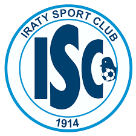
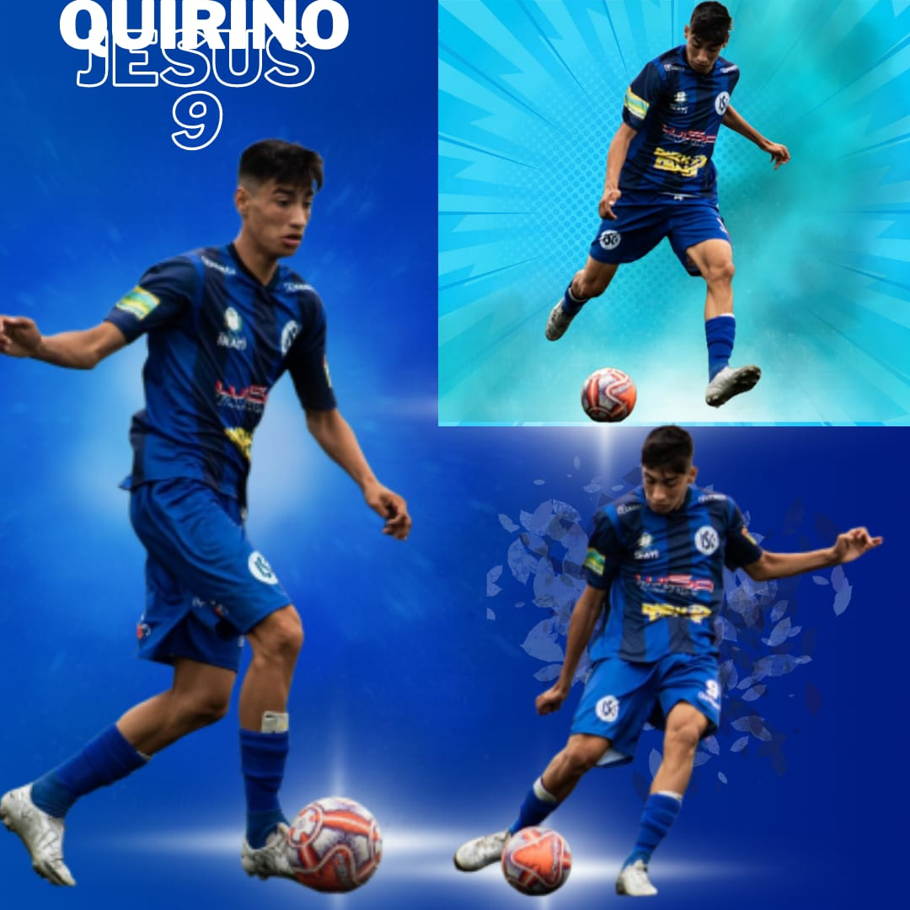

HINO DO IRATY I.C
Sou azulão de coração
Sou Iraty até morrer
Vai azulão que a multidão
Veste a camisa com você
Do interior a força azul
Que orgulha a pérola do sul
Solta seu grito com emoção
Tinge de azul meu coração
Em campo a história a tradição
Meu Iraty meu azulão
Iraty Sport Club essa bandeira
Eu sempre quero desfraldar
E a torcida sua fiel companheira
Vai a vitória lhe levar
Pões sua força, sua garra, sua luta
Põe no gramado o seu talento em ação
Time em má fase.
Entrou em dividas muito altas nao conseguem sair da 3 divião mais seguem em luta.

